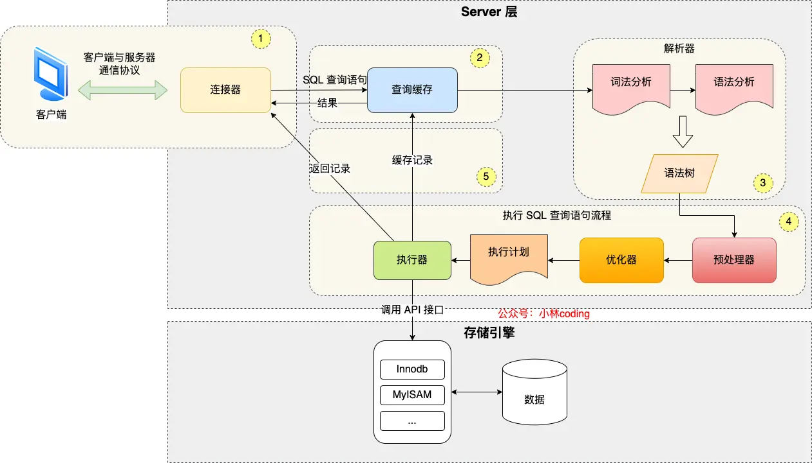
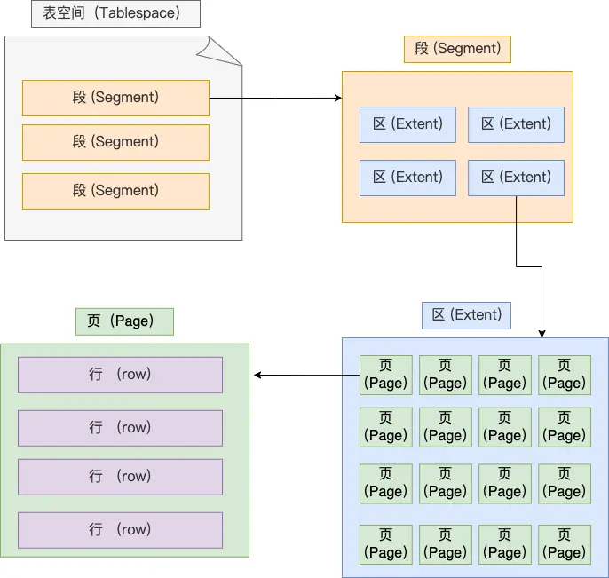
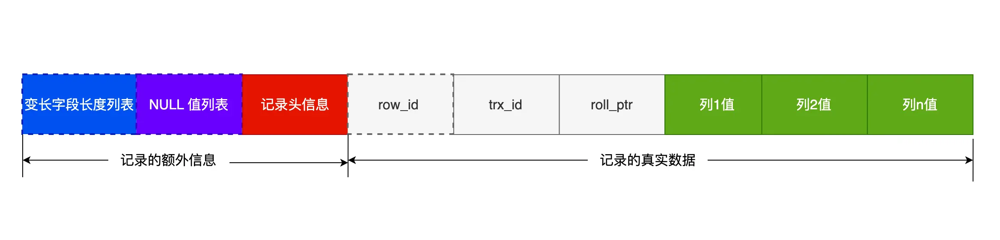

数据库（一）绪论
执行select的过程

连接器
客户端通过TCP三次握手与数据库建立连接
查询缓存
如果 SQL 是查询语句（select 语句），MySQL 就会先去查询缓存（ Query Cache ）里查找缓存数据，看看之前有没有执行过这一条命令，这个查询缓存是以 key-value 形式保存在内存中的，key 为 SQL 查询语句，value 为 SQL 语句查询的结果。
解析SQL
解析器完成词法分析（根据输入的字符串识别出关键字）和语法分析（判断语句语法）
执行SQL
预处理器
-
检查 SQL 查询语句中的表或者字段是否存在
-
将
select *中的*符号，扩展为表上的所有列
优化器
优化器主要负责将 SQL 查询语句的执行方案确定下来，比如在表里面有多个索引的时候，优化器会基于查询成本的考虑，来决定选择使用哪个索引。
例如对于联合索引（a,b,c）若查询为where b=1 and a=2时会将a=2提前作为索引查询
执行器
执行器根据执行计划执行 SQL 查询语句，从存储引擎读取记录，返回给客户端
MySQL 一行记录是的存储结构
数据库文件的存储目录
[root@xiaolin ~]#ls /var/lib/mysql/my_test
db.opt # 默认字符集和字符校验规则
t_order.frm # 表结构
t_order.ibd # 表数据表空间文件（.ibd）的存储结构
表空间由段（segment）、区（extent）、页（page）、行（row）组成，InnoDB存储引擎的逻辑存储结构大致如下图

行（row）
数据库表中的记录都是按行（row）进行存放的
页（page）
记录是按照行来存储的，但是数据库的读取并不以「行」为单位，否则一次读取（也就是一次 I/O 操作）只能处理一行数据，效率会非常低。因此，InnoDB 的数据是按「页」为单位来读写的。默认每个页的大小为 16KB，也就是最多能保证 16KB 的连续存储空间。
页的类型有很多，常见的有数据页、undo 日志页、溢出页等等。数据表中的行记录是用「数据页」来管理的
区（extent）
InnoDB 存储引擎是用 B+ 树来组织数据的
B+ 树中每层都是通过双向链表连接的，如果是以页为单位来分配存储空间，那么链表中相邻的两个页之间的物理位置并不是连续的，可能离得非常远，那么磁盘查询时就会有大量的随机I/O，随机 I/O 是非常慢的。
在表中数据量大的时候，为某个索引分配空间的时候就不再按照页为单位分配了，而是按照区（extent）为单位分配。每个区的大小为 1MB，对于 16KB 的页来说，连续的 64 个页会被划为一个区，这样就使得链表中相邻的页的物理位置也相邻，就能使用顺序 I/O 了。
段（segment）
表空间是由各个段（segment）组成的，段是由多个区（extent）组成的。段一般分为数据段、索引段和回滚段等。
- 索引段：存放 B + 树的非叶子节点的区的集合
- 数据段：存放 B + 树的叶子节点的区的集合
- 回滚段：存放的是回滚数据的区的集合
InnoDB 行格式（COMPACT 为例）
